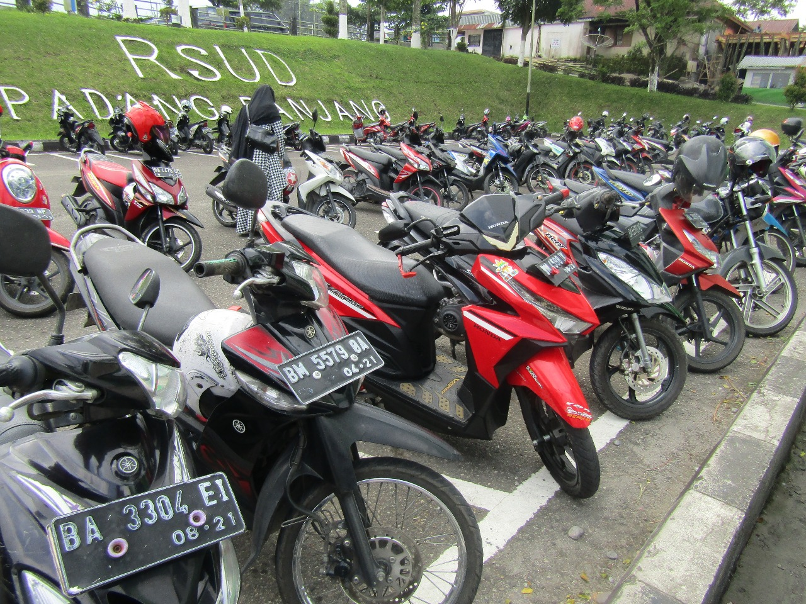

Fasilitas Publik RSUD Kota Padang Panjang
Masjid Assyfa
Dalam bahasa Arab Syifa artinya obat, penyembuh, sifat, keadaan. Asy-Syifa sendiri merupakan julukan dari kitab suci umat Islam, Alquran. Dalam QS Yunus 57, disebutkan bahwa salah satu sebab Alquran diturunkan adalah sebagai penyembuh penyakit hati. Begitu pula di QS Fushilat 44, disebutkan bahwa Alquran merupakan petunjuk dan penawar bagi orang-orang mukmin. Diberikannya nama Assyifa terhadap mesjid RSUD Padang Panjang ini diharapkan dapat menjadi penawar penyakit bagi pasien yang datang berobat kesini. Lingkungan mesjid yang bersih, rapi, dan sejuk memberikan kesan nyaman bagi siapapun yang datang berkunjung. Mesjid Assyifa dapat dikunjungi oleh seluruh karyawan RSUD Padang Panjang dan pasien-pasien beserta keluarga untuk menunaikan shalat wajib lima waktu, dan shalat Jum'at bagi kamum muslimin. Kegiatan Rutin di Mesjid Assyifa adalah pengajian atau majelis dakwah yang diadakan setiap hari Kamis pada minggu kedua dan keempat setiap bulannya. Majelis dakwah ini dikelola oleh tim rohani RSUD Padang Panjang.
Area Parkir Roda Dua & Roda Empat
Area parkir kendaraan yang disediakan di RSUD Padang Panjang cukup luas dan terpisah antara roda empat dengan roda dua. Kantong parkir disediakan di beberapa titik, diantaranya sebelah utara (depan poliklinik baru) disediakan kantong parkir khusus sepeda motor yang dapat menampung sekitar 150 kendaraan roda dua, sebelah barat (depan kantin) digunakan untuk kantong parkir kendaraan roda empat, sebelah selatan (dekat poliklinik kebidanan) disediakan untuk kendaraan roda empat, dan sebelah timur (dekat poliklinik jantung dan toserba) disediakan untuk parkir mobil dan kendaraan roda dua. Parkir di RSUD Padang Panjang dikenakan biaya untuk setiap kendaraan yang keluar masuk. Setiap kantong parkir dijaga oleh petugas parkir untuk keamanan kendaraan pengunjung.
Area Parkir Khusus Disabilitas
Area Parkir khusus disabilitas terletak disamping gedung poliklinik. Area parkir khusus disabilitas ini ditujukan khusus untuk pasien disabilitas.
Area Bermain Anak-Anak

Area Parkir khusus disabilitas terletak disamping gedung poliklinik. Area parkir khusus disabilitas ini ditujukan khusus untuk pasien disabilitas.
Taman

Khusus untuk Taman hanya tersedia di lobi utama pendaftaran online yaitu taman air mancur RSUS Kota Padang Panjang.
Free WIFI Pada Area Publik
Free Wifi terletak gedung Poliklinik bersamaan dengan ruang baca. untuk mengakses silahkan login terlebih dahulu dengan menggunakan akun tamu dan password tamu.
Ruang Baca
Ruang baca publik berada di antara ruang tunggu poliklinik. Pasien dapat memanfaatkan bahan bacaan yang disediakan di ruang baca ini. Disini disediakan koran terbaru, mading, leaflet, brosur, majalah, dan buku-buku bacaan. Terdapat juga sofa nyaman untuk pengunjung yang ingin membaca sambil menunggu pemeriksaan dokter.
Kantin

Kantin Terletak dibeberapa sudut RSUD Kota Padang Panjang seperti di dekat Kantor dan dibelakang IGD atau didekat parkir roda empat.
ATM

Terdapat dua ATM di lingkungan RSUD Padang Panjang, yaitu ATM Bank Nagari dan ATM BRI. Kedua ATM ini beroperasi 24 jam, terletak berdampingan dan berada di posisi strategis RSUD.
Toserba

Toserba atau toko serba ada menyediakan perlengkapan harian. Toserba berada di bagian selatan RSUD Padang Panjang. Toserba ini buka mulai jam 9:00 s/d 20:00. Bagi pasien yang membutuhkan perlengkapan harian bisa datang kesini. Toserba ini juga menyediakan mesin fotocopy, materai, dan perlengkapan ATK.